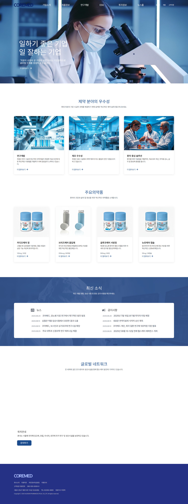
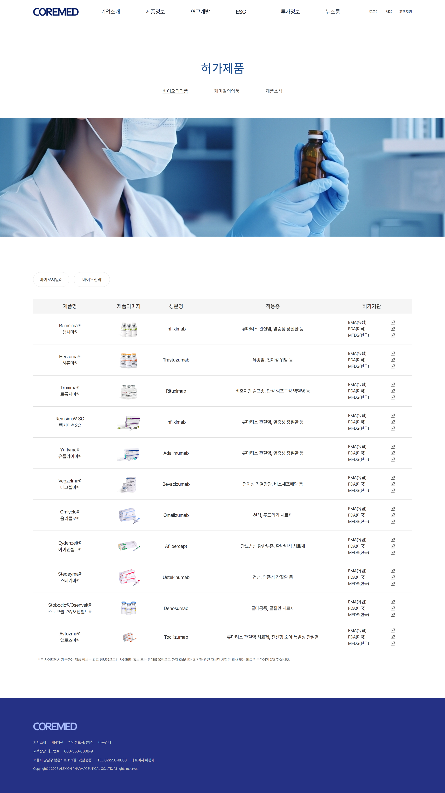
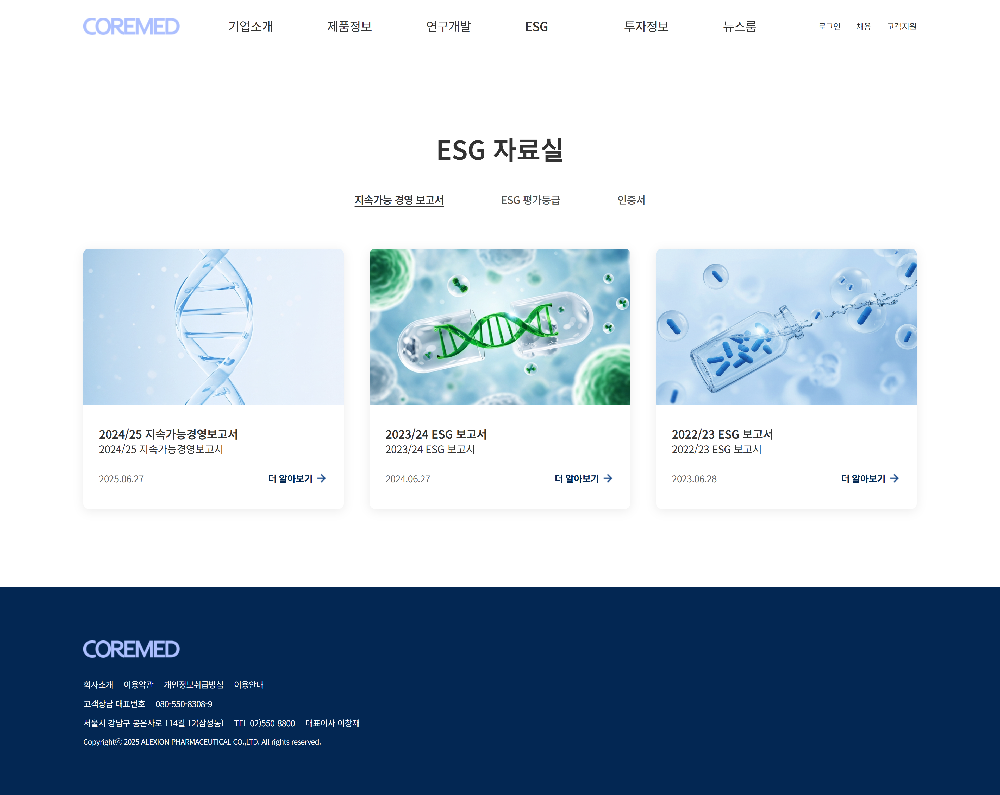

Project Workflow
01
Discovery
- 제약회사 웹사이트 레퍼런스 분석
- 기업소개, 허가제품, ESG 중심의 페이지 구조 기획
02
Design
- 신뢰성과 전문성을 표현하는 네이비 블루 계열 컬러 팔레트 선정
- Whisk AI로 생성한 실험실/연구 현장 이미지 활용
- Figma로 와이어프레임 및 UI 디자인
03
Development
- fetch API로 header/footer를 별도 HTML 파일로 분리해 모든 페이지에서 공통 로드
- IntersectionObserver로 스크롤 진입 시 섹션 페이드인 애니메이션 구현
- IntersectionObserver로 카드 순차 등장(0.1초 간격) 애니메이션 구현
- 숫자 카운터 애니메이션 구현 (0 → 100, setInterval 기반)
- 시맨틱 table로 허가제품 정보 구조화
- Google Maps iframe 삽입, loading="lazy"로 초기 로딩 최적화
04
QA
- 크로스 브라우징 테스트 (Chrome, Safari)
- 반응형 검증
05
Deploy
- GitHub Pages 배포



ESG Menu
지속가능 경영 보고서, ESG 평가등급, 인증서 카테고리를 상단 메뉴로 배치하고, 현재 활성화된 메뉴에 .on 클래스를 적용해 시각적으로 구분했습니다.
ESG Report Cards
연도별 ESG 보고서를 카드 형태로 나열했습니다. IntersectionObserver로 카드가 화면에 진입할 때 0.1초 간격으로 순차 등장하도록 구현하고, hover 시 이미지 확대 효과를 CSS transition으로 적용했습니다.